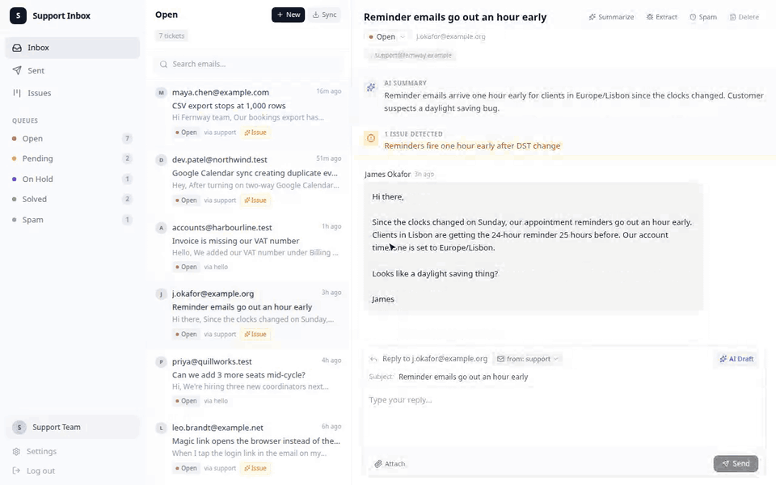
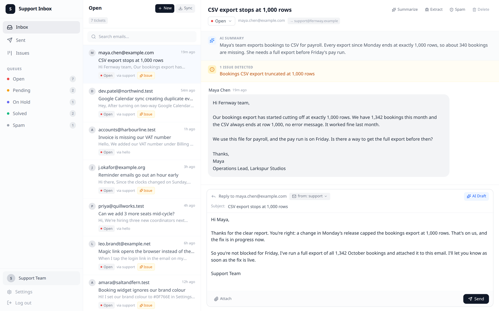
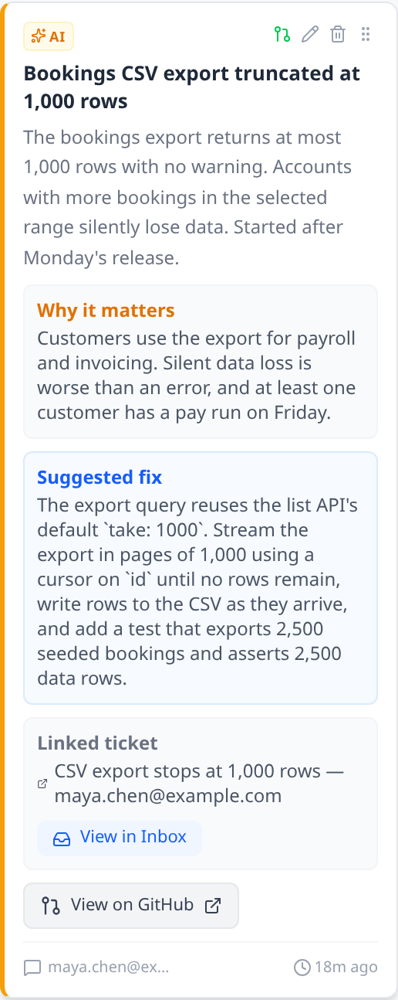
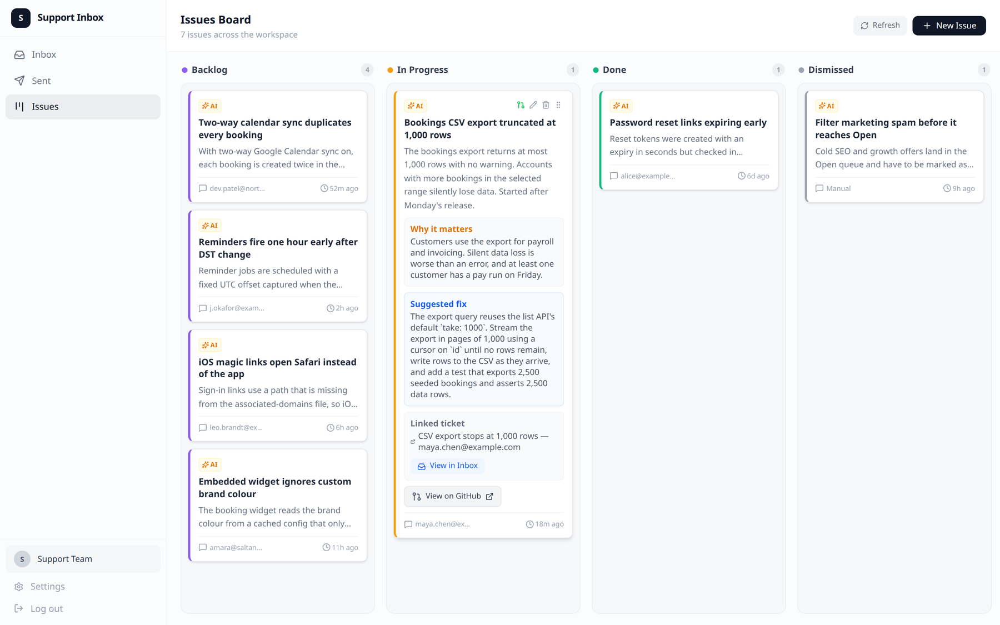
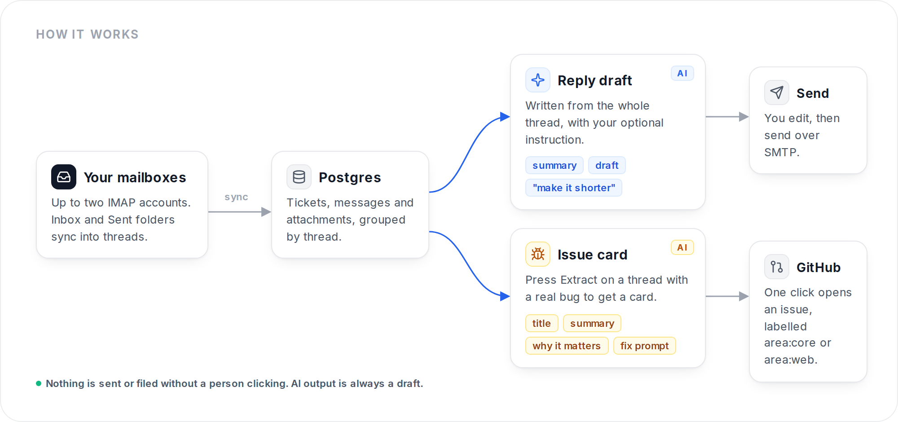

Every support email becomes a reply draft and a ready-to-fix issue.
A small, self-hosted help desk for software teams. Connect your mailboxes, answer customers with AI drafts you edit, and turn real bugs into issue cards with a fix prompt your coding agent can act on.

The real app, recorded headless with invented demo data. Drafts are generated on request; nothing is sent until you press Send.
A reply draft for every thread, in your voice.
Open a ticket, press AI Draft, and optionally tell it what you want. The draft reads the whole thread, then lands in the reply box for you to edit.
- Custom instructions. "Make it shorter", "offer a refund", "ask for request IDs".
- One-click summary pinned above the thread, so you can triage without reading every message.
- Two mailboxes. Reply from the right address, with a founder sign-off when you reply as yourself.
- Queues: Open, Pending, On Hold, Solved and Spam.

Real bugs become issue cards a coding agent can act on.
Press Extract on a thread that describes a real problem. You get a card with a title, a full problem summary, why it matters, and a detailed fix prompt. Drag it across the board, and push it to GitHub with one click.


- Routed to the right repo. Describe your backend and frontend once; issues are labelled
area:coreorarea:web. - Status stays in sync. Moving a card to Done or Dismissed closes the GitHub issue.
- Optional auto-triage with an included Simili config that moves issues to the right product repo.
Mail in, drafts and issues out. A person clicks every send.

Running in five commands.
You need Node 22+, a Postgres database and an OpenAI API key. The seed adds invented demo tickets so you can look around before connecting a mailbox.
DATABASE_URL | Postgres for tickets, messages and issues |
AUTH_PASSWORD, AUTH_SECRET | Shared login and cookie signing |
OPENAI_API_KEY | Drafts, summaries and issue extraction |
EMAIL_1_*, EMAIL_2_* | IMAP and SMTP per mailbox |
GH_PAT, GH_REPO | Where issues are created |
$ git clone https://github.com/harrythentrepreneur/support-inbox-ai.git $ cd support-inbox-ai && npm install $ cp .env.example .env # fill in the values $ npx prisma migrate deploy $ npx prisma db seed # optional demo data $ npm run dev # http://localhost:3000
Give your support inbox a second job.
Star the repo, run it on your own mail, and send the bugs straight to your backlog.